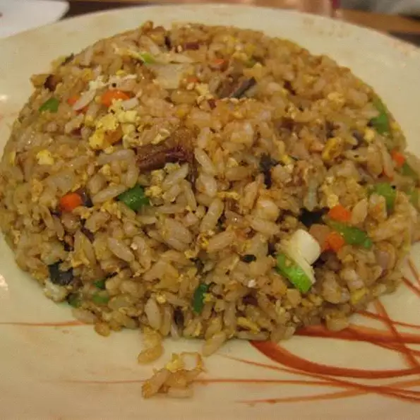

Easy Japanese Fried Rice

An easy to make fried rice dish
With simple ingredients and equally simple directions, Japanese fried rice is a must have
in your meal rotation. Made in just over an hour this is an easy choice either for
yourself or for when you have company. This recipe serves 8 but the amounts can easily be scaled
larger or smaller.
Ingredients
- 2 cups of jasmine rice
- 2 cups of chicken stock
- 1 1/2 cups of water
- 4 table spoons of butter
- 2 large eggs beaten
- 2 tablespoons vegetable oil
- 3 tablespoons sesame seeeds, or to taste
- 2 table spoons soy sauce
- 1/8 teaspoon salt
- 1/8 teaspoon ground black pepper
Directions
- Place rice, chicken stock, and water in a medium saucepan; bring to a boil. Reduce heat to
low, cover, and simmer until tender and liquid has been absorbed, 15 to 20 minutes.
- Remove from the heat, stir in 2 tablespoons butter, and let cool to room temperature, about 30 minutes.
- Heat vegetable oil in a skillet over medium heat. Add eggs and scramble, stirring often to chop chunks of egg
into small bits with a spatula.
- Place rice in a large mixing bowl, add eggs, and toss together.
- Melt remaining 2 tablespoons butter in a large frying pan over medium-high heat. Dump rice mixture into the
hot pan. Add sesame seeds, 2 tablespoons soy sauce, salt, and pepper. Cook, stirring often, for 8 minutes.
- Taste and add more butter or soy sauce as desired. Serve.
HOME